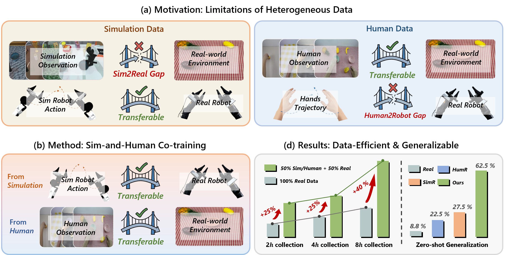
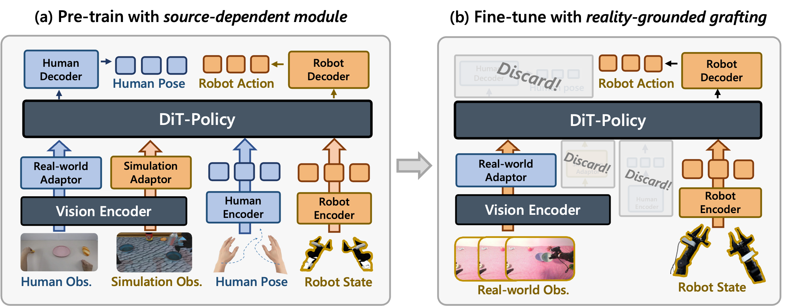
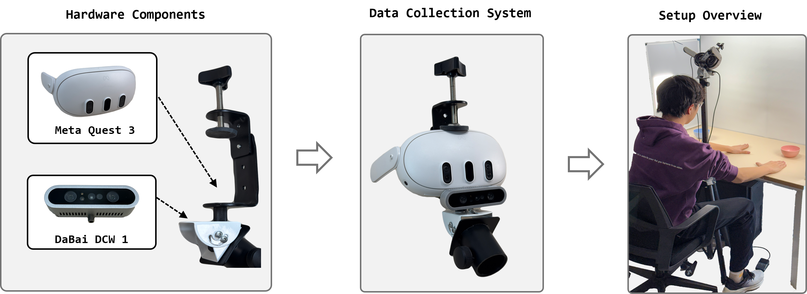

DexWild enables generalization to unseen objects, environments, and robot embodiments... (在这里填入你的项目介绍文字)



Data-Collection System is a portable, high-fidelity, and embodiment-agnostic data collection system capable of efficiently gathering dexterous human hand data across many environments. We employ a team of untrained data collectors and collect 9,290 demonstrations across 93 diverse environments at 4.6× the speed of teleoperation.
Training with DexWild data, our policies are capable of zero-shot transfer to a new robot arm and few-shot transfer to a new robot hand. This is because DexWild data is embodiment-agnostic. The cameras only capture task-relevant information and the human hand data can be retargeted to any end effector-we train on LEAP V2 Advanced and Xarm6 yet can transfer to Franka Panda arms and LEAP Hands. This enables us to deploy on entirely new robots, in unseen environments, and with never-before-seen objects.
Training with DexWild data, our policies are capable of zero-shot transfer to a new robot arm and few-shot transfer to a new robot hand. This is because DexWild data is embodiment-agnostic. The cameras only capture task-relevant information and the human hand data can be retargeted to any end effector-we train on LEAP V2 Advanced and Xarm6 yet can transfer to Franka Panda arms and LEAP Hands. This enables us to deploy on entirely new robots, in unseen environments, and with never-before-seen objects.
@article{tao2025dexwild,
title={DexWild: Dexterous Human Interactions for In-the-Wild Robot Policies},
author={Tao, Tony and Srirama, Mohan Kumar and Liu, Jason Jingzhou and Shaw, Kenneth and Pathak, Deepak},
journal={Robotics: Science and Systems (RSS)},
year={2025}}